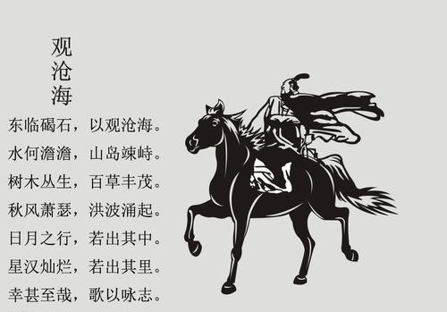

2020年第四届“华夏文化，有冀可寻”河北地域特色文化线上展览|山海文化篇
河北省是中国唯一兼有高原、山地、丘陵、平原、湖泊和海滨的省份， 地跨海河、滦河两大水系，天然禀赋，风水绝佳，所以毫不夸张的说，当你领略了河北的山海之后，也就见过了祖国的各种地貌。河北的山山水水是那样的可爱，“我见青山多妩媚，料青山见我应如是”，让我们一起共同欣赏河北山海的美丽吧！
秦皇岛，一座山海之城，因山而荣，因海而兴。山与海，血脉相连，构成了秦皇文化的主干，这山海对于秦皇岛人来说，无疑是最神圣的图腾。正是由于共生的山海，秦皇岛才得以形成这独特的山风海韵幽燕文化，文化因山海衍生，亦因山海而繁盛。
秦皇岛背倚燕山，北部山势连绵。棱角分明、黄土覆盖、怪石嶙峋的山数量十分庞大。而其中不得不说的当属角山、长寿山和碣石山这三座山峰。
角山位于距山海关城北约3公里处，是关城北山峦屏障的最高峰，海拔519米。其峰为平项，可坐数百人，有巨石嵯峨，好似龙首戴角而名。1961年被确立为国家首批重点文物保护单位。是万里长城从东部海中向北绵延所跨越的第一座山峰，所以又有万里长城第一山之称。角山山势巍峨，绵延起伏，是山海关的天然屏障。前山可俯视关城，眺望大海，后山可赏层峦叠嶂，观北国桂林燕塞湖，山色湖光，山水相依，令人心旷神怡。登上角山敌台，近邻断崖峭壁，远望群峰起伏，大海如在脚下，长城倒挂山间，有诗曰自古尽道长城险，天险要隘在角山，长城倒挂高峰上，俯视关城在眼前。观之令人情趣勃发，思绪万千，充分领略到不到长城非好汉的豪迈气魄。角山不但是形势要地，而且名胜很多。坐落在山腰的栖贤寺，始建于明初，是明清时期肖显、詹荣等文人雅士读书隐居之所。角山后峰名围春山，肖显从福建辞官归田后，在这里建起草堂，名围春山庄他便在这里优游终生。角山风景秀丽，环境清幽，实为探幽访古之佳境。
（角山） （栖贤寺）
然后要介绍的就是长寿山，长寿山风景区位于山海关城东北约9公里处，东起黄牛山，沿长寿河流域呈东西走向，是一处集自然、人文景观于一体的风景名胜区。其东西长6.5公里，区域顶峰175公顷，整个风景区以长寿河谷的自然风光为基础，集山、石、洞、窟、溪及中草药植物为一身，以长寿延年为宗旨，弘扬祖国的传统医学。以雕塑、书法、建筑、园林等手法为表现形式，独步世界旅游之林，长寿山，人长寿，山水相映，古今交融，峰奇石异，水趣洞幽，神游幻思，美不胜收。

长寿山石洞之最的悬阳洞是一个天然形成的穿透式的花岗岩洞，它最早的垦辟和建设在明代，明初洪武年间，四川峨眉僧人到此建庙塑像，并以汉隶形式留下第一笔“蜀人创修”。之后随着明代魏国公徐达1381年在山海关建关设卫，这里边臣游子聚会，僧人、道士云集，百姓香客络绎，文人墨客咏诵，到了清末甚至有来华洋人涉足，民国年间，三道关有位主持道人叫董有灵，在前洞建有万仙楼，后洞建有孔庙和地藏王菩萨，更使这里达到了儒、释、道三教一家，他们和平共处，修真养道，我国许多名山常为一个宗教流派所独居，或以某一宗教为主，而悬阳洞则是三教并立，融融相生，成为悬阳洞历史上宗教文化现象的一大特点。
寿字碑林是长寿山景区钟最引人入胜的景观之一，它是利用中国传统的书法艺术结合长寿山的奇峰异石而建造的人文景观。在大小不一，方圆各异的怪石上镌刻着不同朝代，不同字体，阴阳文不同形式的名人“寿”迹，这些因石而制的摩崖雕字，或隐或现，或藏或露，字形各异，神彩飞动，那异曲同工的百家书风，构成了中国历代书法名家之“寿”字大成，表现了中华民族书法文库的独特神韵，成为东方雕刻、书法相融合的艺术风景。
最富盛名的的石门胜景，巍峨对峙的石门山上明代“百二山河”镌刻古朴雄深，山形如刀削斧劈，气势磅礴，蔚为壮观。据传，薛礼征东时，曾与高丽兵激战于此。黄天霸与窦尔墩在此一决雌雄，石门为军事要塞，历史上多在此屯兵驻守，唐代高丽人常向中原进犯，并在此屯兵驻守，薛礼征东时，在此与之大战，高丽军兵败，弃营而退，现仅留下此遗址作为历史的佐证。
秦皇岛的群山中最著名也最重要的一座山，当属碣石山。这可以说是整个区域的文化地标了，这座山独特就独特在它脱离于燕山主脉，而是崛起于华北大平原上，而又体量硕大，望过去气象非凡。所以，秦始皇、曹操这两位中国史上数一数二的“鹰派”统治者曾驾临此山，公元207年(建安十二年)的秋天，在西拉木伦河畔剿灭乌桓之后，从辽西经喜峰口返程的路上，52岁的曹操专门向东，登临碣石，“以观沧海”。作为组诗《步出夏门行》的一章，《观沧海》已传诵千年。
海拔只有659.1米的碣石山，攀爬起来绝非易事。其山腰部位，是由大面积花岗岩构成的绝壁。其柱状山顶，岩壁更是直上直下。古人形容其“万仞绝壁，形如甕鼓，黧沫溅溜，神娲难炼，鬼斧莫凿”。这样的山势，必然使曹操忆起刚刚经历过的不平常征程。
北征乌桓出发前，僚属对于南征还是北伐争论不休。七月启程时，又逢暴雨，傍海道路难行，甚于南方水乡。找到向导从喜峰口进入燕山腹地后，更加“道绝不通”，只得“堑山堙谷五百余里”，西行至白檀（今滦平），而后折东，经过平冈（今平泉），才最终抵达乌桓总部。
但登顶之后，极目远望，沧海浩瀚无际，纳百川，汇江河，一碧万顷、水天一线，不禁心旷神怡，感慨万千。面对此情此景，曹操用饱满的文字折射出一种不一样的内心境界——神龟虽寿，犹有竟时；腾蛇乘雾，终为土灰。老骥伏枥，志在千里；烈士暮年，壮心不已。
仔细再想，碣石山下也是韩愈永远的精神故乡，其自号“昌黎”，有《谏佛骨表》这样一篇铁骨铮铮的文章传世。这里同样也是商代孤竹国之旧地，有伯夷叔齐饿死殉国之事。总之，秦皇岛之山，博大、刚烈、凛然而悲怆。吊诡的是，碣石山下的昌黎近年来却以甜美的葡萄、飘香的葡萄酒所著称，以“葡萄美酒夜光杯”的生活场景解构了历史的沧桑。

曹操登山所做《观沧海》
登碣石山所见景色
秦皇岛的海，亦有不同。日本暖流的一个分支再分支抵达此处，带来了终年不冻而又清澈如许的海水，秦皇岛的能源大港与海滨胜地之地位皆来源于此。有时我会观想，当年始皇帝求仙所入的可是这片海？据《史记秦始皇秦本纪》记载，秦始皇于公元前215年（始皇32年）第四次出巡至碣石，并在此拜海，先后派卢生、侯公、韩终等两批方士入海求仙，寻求长生不老之药。明宪宗成化13年，立“秦皇求仙入海处”石碑一座，以纪胜境。
“大雨落幽燕，白浪滔天，秦皇岛外打鱼船。一片汪洋都不见，知向谁边？
往事越千年，魏武挥鞭，东临碣石有遗篇。萧瑟秋风今又是，换了人间。”毛主席在面对秦皇岛的海时亦写下如此诗句。那是1954年夏，毛泽东又一次来到北戴河，有一天狂风大作，雷雨磅礴，海面巨浪涌天，原本来休养的毛主席提出要下海游泳，士兵劝阻，太危险了，毛主席却以为风浪越大越好，可以锻炼人的意志，于是下海游了一个多小时，第二天写下了《浪淘沙·北戴河》，主席此时已61岁高龄。
秦皇岛的山、海，构成了它不同于其他滨海旅游城市的历史纵深。大连、威海、青岛、厦门，也只能拿出来点半殖民地时期的历史做做文章，而秦皇岛，有穿越千年的闪亮高度，有一批历史一线人物的重要行迹。易中天品三国要以“魏武挥鞭”作为讲曹操部分的总括，这里虽没有那么多近代建筑遗迹，但却用穿越千年的山海文化底蕴默默展示着这座城市的文化影响。
山是文化山，海是文化海，一山一海都闪烁着文化的光芒！
（选自秦皇山海）
“青山看不厌，流水趣何长”，在我们饱览了河北省的山海之后，是不是即使处于疫情期间，大家的心中也燃起了对河北山海的热爱？山海展示就此结束，感谢大家欣赏。
注：一切解释权归廊坊师范学院会展经济与管理专业所有